收录于合集

简
黄薇
中国社会科学院世界经济与政治研究所副研究员。
该文章获得2016年度“中国国际关系研究优秀论文奖 ”
**摘要
**
投票机制是国际组织进行决策的重要机制，投票过程反映的是权力的博弈。以IMF在2008年份额与投票权改革前和2010年改革后的权力分配方案为基础数据，对其成员国在改革前后的决策权变化进行比较证实，改革的确有助于IMF成员国决策权差距的缩小。如果采取70%多数票获胜规则将意味着美国绝对否决权的丧失，因而更有利于中国等新兴经济体的权力提升。此外，测算结果还显示，投票权比重变化与决策权变动之间并没有严格对应关系。投票权比重的上升并不一定意味着决策权的上升。投票权比重不同的国家，其决策权仍可能相同。
份额 投票权 多数票规则 权力指数 关键词
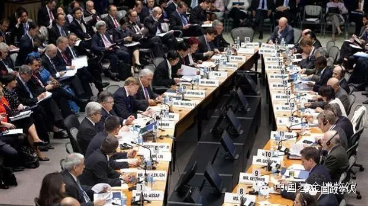
国际货币基金组织（IMF）2016年1月27日宣布，《董事会改革修正案》已从1月26日开始生效，这意味着中国正式成为IMF第三大股东。（图片来源：中国基金博物馆）
**引言
**
金融危机以来,全球治理朝着多极化､多元化方向发展, 世界银行以及国际货币基金组织的领导结构迫切需要作出适应性改革｡尤其是以中国为代表的新兴经济体在全球经济格局与政治活动中的重要性不断上升,它们在多边金融机构中的资金需求和出资能力已经发生相应变化｡IMF最后一次全面增资是在1998年,其资金规模和份额分配明显落后于现实需求｡为了让IMF 能够在全球金融稳定中扮演更加重要的角色, 经由理事会绝对多数同意,IMF 分别在2008年和2010年提出了两个份额与投票权改革方案｡在成员国的支持下,2008年改革方案顺利通过, 并于2011 年3月生效｡与此同时, 二十国集团也在积极推动IMF2010年的份额与投票权改革方案走向实现｡但是,由于成员国投票程序受阻,2010年改革方案直至2015年底才获得足够的赞成票,2016年初才正式宣布获得通过｡依据这一改革方案,IMF资金规模将扩大一倍, 份额将实现向新兴经济体和发展中国家整体转移6个百分点｡IMF官方资料显示,2010年IMF改革方案生效后,中国在IMF所拥有的份额和投票权比重从原来的第六位跃居第三位,仅次于美国和日本｡
那么, 份额的提高是否意味着新兴经济体和发展中国家在IMF的决策权也相应提升了六个百分点呢?要准确地回答这一问题,必须明确IMF份额与投票权之间以及投票权与决策权之间的关系｡
作为组织活动的重要方式和条件, 表决制度是国际组织决策的核心内容 , 并直接影响到国际组织的工作效率和履行职能的效果｡合理分配成员国的决策权是提升合作效率､保障国际组织可持续运行的核心内容｡决策权即国际组织中各成员对重大事务的决定权,而投票则是各成员行使决策权的主要活动｡通常人们会把投票权大小,即投票票数的多少,作为衡量权力的标准｡以IMF为例, 如果份额的提高意味着投票权的提高,那么,投票权的提高是否意味着决策权的提高? 投票权与决策权之间是否存在明确的线性关系？
目前,以IMF为例的相关研究大致集中在以下两个方面｡第一类偏向定性描述和评论,侧重介绍IMF份额与投票权改革的基本情况,强调资金规模不足､份额分配不公平､份额计算公式不合理等｡这一类研究以定性分析与提供改革建议为主｡第二类则关注投票行为和投票规则对权力的影响｡在研究了IMF的投票规则以及执行董事会构成后,姚大庆通过实证方法,验证了美国在IMF执董会拥有霸权地位这一判断｡但该研究仅限于对执董会的权力分配，并未涉及更加根本的IMF份额及投票权改革前后的权力分配变化｡里奇等学者分析了欧洲成员国在IMF 份额与投票权改革前后的权力变化, 认为IMF 份额与投票权改革对欧洲成员的影响相对有限｡但该研究未能进一步揭示IMF 改革对非欧洲成员国决策权的影响｡
随着国际地位的提升,中国在各类国际组织及国际机制中的参与度不断提高,厘清投票权与决策权之间的关系已经成为提升中国国际参与能力的迫切问题｡作为一个存在超过60年的国际金融机构,IMF 是国际多边金融机构的范本, 深入分析其决策制度和权力分布,无疑将有助于中国未来在新型国际多边金融机构建设中的参与｡
基于此,本文拟在吸收已有研究成果的基础上,用权力指数对IMF中的权力分配进行量化研究｡
IMF份额与投票权的制度安排与改革
IMF在建设初期就将投票机制 (voting mechanism) 作为其获得决策合法性和体现决策效率的根本机制｡根据《国际货币基金组织协定》(以下简称 “IMF协定”)，关于份额､汇兑､业务与交易､组织与管理､特别提款权相关条款､成员国的退出､紧急措施､协定的修改和解释等原则性或重大核心业务及管理方面的决定均需要通过投票的方式予以确定｡
（一）制度安排
IMF的投票机制由份额､投票权以及投票规则三大部分构成｡
1. 份额的定义与计算
份额是IMF的主要资金来源,由成员国根据协议缴纳｡份额的多寡与成员国在IMF的权利与义务有紧密联系｡IMF各成员国的份额计算,主要考虑了成员国在世界经济中的相对位置､财政实力以及潜在的借款规模, 具体体现为成员国经济规模 (市场价的国内生产总值､购买力平价PPP 衡量的国内生产总值)､经常性收支情况､净资本流量和官方储备｡2008年改革之后的份额计算公式如下:
CQS=(0.5Y+0.3O+0.15V+0.05R) *0.95 (1)
其中,CQS指可计算份额;Y为近3年混合GDP的年平均值,tGDP指市场汇率国内生产总值);O 为开放度指标,用近5年中经常性收入与支出之和的年平均值来测算;V 指经常性收入与净资本流的变化率在近13年中围绕3年期中值的标准差;R 反映储备情况, 为涵盖外汇､黄金储备等在内的官方储备在一年中的月均值｡
2. 投票权的构成原则
在国际多边合作中,投票机制大体可以分为两类: 一类是一国 (或成员) 一票制,强调平等原则｡这类机制常见于联合国､金砖国家新开发银行等国际组织的决策中｡其中,全体一致的投票结果就其理论而言可以实现福利经济学意义上的帕累托最优｡另一类则是加权投票制, 强调效率原则｡根据投票者贡献大小, 赋予其不同的投票数量｡这类机制主要用于联合国下属机构｡在一国一票制度下各国具有相同的权力分布｡而在加权投票制下, 由于拥有投票票数的多寡会对选择结果造成不同影响,因此投票票数的多少通常被视为权力大小的代理变量｡
IMF､世界银行､亚洲开发银行等国际多边金融机构,大多采用加权投票制, 即根据一定标准给予成员国不同的投票表决票数, 以此来确定各成员国的投票权大小｡该制度的产生可追溯至1815年ICPR)｡该委员会规定,表决权的大小由成员国境内的河流长度确定｡尽管名义上IMF采取的是平等 (基本投票权,即一国一票制) 与效率 (加权投票权, 即一元一票制) 相结合的投票权分配制度,但实际其投票权多寡主要由加权投票权决定｡总体上看,权力与义务相匹配的加权投票制是在国际多边金融机构的决策中占据主导地位的投票模式｡
3. 投票权的测算方法
根据2011年版的IMF协定,IMF将投票权分为基本投票权和加权投票权两部分｡基本投票权与份额无关,而加权投票权则与份额挂钩｡根据IMF协定第十二条第5款:“(a) 每个成员的总票数等于基本票数和以份额为基础的票数之和｡i) 每个成员国的基本票是, 所有成员国总投票权加总之和的5.502% 在所有成员国之间平均分配所得票数｡基本票数应为整数｡ii)以份额为基础的票数是, 按份额每10万特别提款权 (SDR) 分配1票｡”同时, 若一国份额在表决前发生过买卖变化,则该国份额每购入 (卖出)40万特别提款权对应增加 (减少)1票｡
基本投票权的设置是为了体现国家主权平等原则, 照顾小国及贫穷国家的利益｡每个成员国拥有相同数量的基本投票权｡由于持续不断的增资,IMF 的资金规模不断扩大,但基本投票权却被极大地稀释｡IMF的基本投票权占总投票权比重已从1945年的11% , 下降至2006 年的2% ｡直到2008 年的改革方案中提出将基本投票权扩大 3 倍后, 该比重才提升至现在的5.502% , 但仍大幅落后于初期水平｡与基本投票权关注的平等原则不同,加权投票权则体现了责任与权力相一致的效率原则｡为鼓励大国承担更大的出资义务,IMF有关加权投票权的规定实际确认, 特别提款权所代表的份额多少是确定成员国投票权大小的重要依据｡
4. 主要决策规则IMF的决策机制 大致可以分为两类：
一类采用协商一致的方式达成共识,另一类即是投票表决｡协商一致在IMF协定中被列为成员国的一般义务,通常被用于外汇制度磋商｡但除非有明确规定,IMF的所有决议均以投票方式进行｡实践中, 投票表决又分为两种方式:一种是单纯基于投票权的多数获胜制, 一种是结合参与投票成员数量与投票权的双重多数获胜制｡例如,IMF协定的修改就采用了双重多数获胜制,即五分之三的成员国参与且获得85%的总投票权支持, 方可获得修订的合法性｡根据IMF协定的不同安排,多数票获胜规则存在三种情况:50%以上获胜､70%以上获胜和85%以上获胜(见表1）
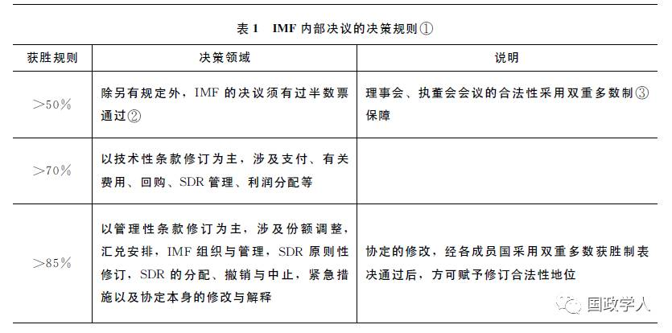
值得一提的是,涉及IMF协定修订需要获得85% 以上多数票方能通过的规定,实际维护了美国在IMF 的绝对否决权｡早在1969年之前, 美国在IMF的投票权就已经达到总投票权的20%以上｡但由于不断增资及份额调整, 美国的投票权遭到稀释,其绝对否决权受到威胁,而85%多数获胜规则的使用则使得美国只需要拥有15%以上的投票权,即可继续享有绝对否决权｡不过,尽管拥有绝对否决权,在过去的50多年中,美国并未在真正意义上行使过否决权｡ 美国更多的是使用其在国际体系中的霸权地位对IMF施加影响｡作为一个承担了全球货币金融治理职能的国际组织,IMF也因此而广受诟病｡IMF 不仅被贴上了美国实施“华盛顿共识”三大机构之一的标签,而且严重损害了其他成员国对于IMF从事货币金融治理的信心｡
5. 份额对投票权的决定作用
根据IMF协定第十二条第5款对投票权的定义,各国投票权数量的计算可用如下公式表示:
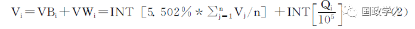
其中,Vi为i国的投票权票数,VBi为i国的基本投票权票数,VWi为i国的加权投票权票数,Qi指i国的份额,INT为取整函数｡目前IMF有188个正式成员国,即n=188｡代入上式后可得:
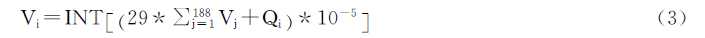
尽管IMF协定规定,成员国可以动用其SDR,并且每40万SDR 的变动对应投票权一票的变化,但是,IMF协定还同时规定不论净购入或净售出SDR,其总量在任何时候均不得超过该国份额｡除非遭遇特殊危机, 很少有国家会动用SDR｡即便遇到流动性困难需要动用SDR, 大部分国家也会尽快恢复其原有份额水平｡因此, 可以认为公式 (3) 是IMF 各成员国投票权的基本分配情况｡由于各国的基本投票权之和只占总投票权的5.502%, 影响力非常有限｡
由公式(3)可知,i国的投票权与份额之间呈现线性正相关关系｡如图1 所示, 成员国拥有的IMF份额已经成为决定其投票权多寡的唯一变量｡当然,对于贫穷的小国而言,对基本投票权的重视的确能放大其决策权｡以IMF中投票权占总投票权比重最低的帕劳为例｡帕劳拥有的投票权占IMF总投票权的比重为0.01287%, 而基本投票权的贡献高达42.7%｡
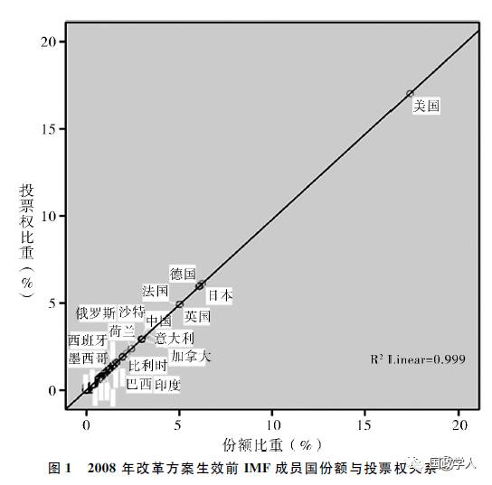
(二) 份额与投票权改革
由于份额决定了投票权比重的大小,因此通常情况下IMF成员国会努力在增资过程中争取扩大其份额｡回顾IMF的历史,成员国对于份额分配的争议从未平息过｡1946年,澳大利亚要求将该国份额规模从布雷顿森林会议设定的份额计算公式所确定的1.34亿美元,恢复至布雷顿森林会议之前确定的2亿美元;紧随其后,埃及代表赛德(Saad)提出,埃及和伊朗也应该以同样理由将份额分别从4500万美元和2500万美元,恢复到原来的6000万美元和3500万美元｡最终, 作为妥协的结果,两个提议均被通过｡
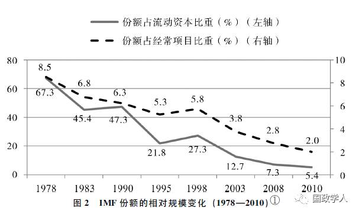
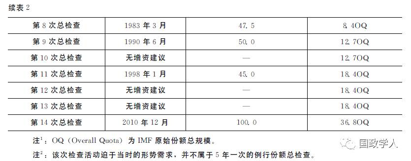
作为IMF的创始成员国, 中国的份额规模曾一度居于第3位｡新中国成立初期,由于中国的代表权问题没有得到及时解决,中国在IMF的份额一度降至第16位｡直到中国恢复联合国合法席位,IMF于1980年4月正式取消台湾当局的代表资格,此后,中国才得以顺利参与到IMF 的增资活动中, 并成为IMF份额与投票权改革的推动者｡
2011年3月,IMF协定的修订案正式生效,该方案主要包括以下四方面内容: (1)份额增加,54个成员国的份额增加约327亿美元SDR;(2)份额调整,代表权向着有活力的经济体转移;(3)将基本投票权提高至原来的3倍,保护最贫穷国家的投票权益;(4)设立新的份额计算公式,新公式包含GDP(50%)､开放程度(30%)､金融波动 (15%)和国际储备 (5%)四个方面, 其中GDP为60%的市场汇率折算 GDP 和40%的购买力平价PPP 折算 GDP相加得到的加权之和｡
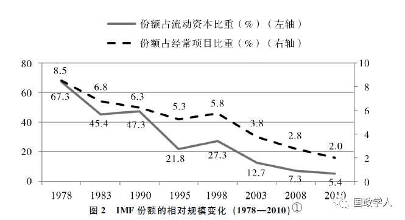
在此基础上,2010年IMF出台了进一步的一揽子改革方案｡其主要内容为：(1)将IMF的总份额规模增加一倍,涉及份额与投票权的转移,并相应降低对于新借款安排的借款保障要求;(2)修订协定以实现更有代表性的､全面选举的执董会制度｡其中,份额改革生效仅需要总投票权70%以上的多数票通过｡而对于协定的修订除了得到超过总投票权85%的多数票, 同时还需满足五分之三以上的成员国认可方具有合法性｡该方案于2015年12月获得通过｡
权力测算方法的理论框架
投票被广泛运用于各种决策活动。关于投票权所代表的决策权的测算，学术界已经进行了长时间的探索。
（一） 权力测算的文献回顾
二战结束后，随着多主体合作事件以及对于合作博弈研究的大量涌现， 学界开始关注投票权与决策权之间的关系。其中，影响较大的是夏普里和舒比克在20世纪50年代的研究｡他们根据组织中个人在二元选择下的权力分布测算, 提出了 Shapley-Shubik指数｡随后,为了更好地将该指数用于政治博弈分析, 夏普里和欧文又分别对该指数进行了优化｡ 目前, 应用比较广泛的投票权测算方法包括: Shapley-Shubik指数､绝对Banzhaf指数 (即 Penrose 指数) 和 Banzhaf指数｡这些指数的基本思想类似,重点考察在特定投票获胜规则下, 由于某参与者加入而导致投票结果由败变胜的联盟数量占所有联盟数量的比重, 即摇摆者或者关键票的获胜概率｡这一概率综合反映的是在各种可能的实际投票方案下, 参与者所拥有的组建决定性获胜联盟(winning coalition) 的概率｡例如, 巴尔和帕萨雷里在结合参与者偏好与投票数量的基础上, 计算了欧盟成员国的Shapley-Shubik指数, 研究欧盟扩大后对投票权分配的影响｡尽管指数计算方法略有差异, 但测算的思路基本一致,选择何种指数不影响对问题的分析和结论｡
在基本研究思路确定后, 学术界涌现出针对上文提及的权力指数的细节刻画, 如Johnston指数､Deegan-Packel指数､Holler- Packel指数和 Coleman指数等等。此外，由于计算每个参与者获胜联盟的复杂程度， 将随着参与者数目的增加而呈现指数增长。因此，在测算较多参与者的决策权时，通常难以采用直接计算的方法，而是需要借助计算科学与复杂理论加以处理， 如蒙特卡尔洛模拟方法、母函数方法和多线扩展近似等。有学者在对投票权的指数测算结果进行比较后发现，决策权不仅取决于投票权的分配情况， 而且也取决于投票程序设计是否有助于形成集体行动。投票理论的研究还包括策略投票行为、议程设置和投票规则等在投票活动中所起的重要作用。还有学者讨论了如何根据不同的参与者数量情况， 设计压抑负面投票权重的投票规则以保障最终的投票效率。
（二） 本文权力测算方法的选择
尽管夏普里和舒比克的方法目前仍是相关权力测算的主流方法，但也有学者存在不同看法。班茨哈夫(Banzhaf)提出， 投票者参与固然重要， 但参与目的本身就是为了行使权力，因此如果将对权力的测算建立在其参与与否之上，将导致逻辑悖论。还有学者认为，分析集体决策时，概率研究思路会比博弈论更合适。因为基于博弈的研究需要先设定一个较强的基本假设，即在相互作为对手的群体中，假设参与者的投票行为具有固定的报偿结构。然而，改用概率方法进行研究则可以回避这个问题。
在指出Shapley-Shubik指数中存在的问题之后，1965年班茨哈夫提出了基于1946年 LionelPenrose概念的概率型权力指数, 即绝对 Banzhaf指数｡1968年科洛曼在其经典文献中也对夏普里和舒比克的方法进行了批评, 他主张采用动态思想来理解权力,并提出了Coleman指数｡
基于以上理由,本文选择绝对Banzhaf指数和Coleman指数作为研究IMF 各成员国决策权的测算方法｡ 绝对Banzhaf指数所测算的是在通过一项投票活动时, 包含关键投票人的投票联盟出现的概率｡在加权投票制度中,αi被定义为由于投票人i的加入使得投票结果发生决定性转变的联盟个数 (也称关键投票人次数)｡即当投票者i投赞成票时,决策结果为通过; 而当投票者i投否定票时, 决策结果为不通过 ｡2n-1是指n-1个投票者分别选择“是” 或“否” 的所有可能的投票结果组合：
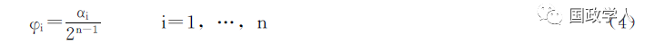
对上述相对决策权进行标准化处理， 得到绝对Banzhaf指数， 其中N为投票者集合：
Coleman指数涵盖三种投票权的测算指数: 集体行动的权力指数､阻止行动的权力指数和倡议行动的权力指数｡其中,Coleman 集体行动的权力指数用于衡量整体达成行动的能力,包括了对决策规则､成员投票权构成及权重等在内的一般性考察｡鉴于集体行动能力并非本文研究的重点, 本文将仅采用Coleman 阻止行动的权力指数和倡议行动的权力指数｡
Coleman阻止行动指数Pi被定义为:
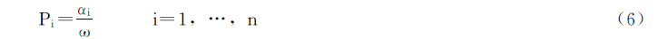
其中,分子αi是指由于投票人i的反对使得原来的获胜联盟转为失败的次数(即出现摇摆状态的数量),分母ω 是指能够产生结果的投票方案的总数｡
由于投票者可能并不一定拥有足够大的倡议能力, 因此即便其拥有完全的阻止权力(即当i国的阻止权力指数Pi=1 时), 该投票者也无法成为一个独裁者｡
Coleman倡议行动指数关注的即是测算投票人提出的提案(发起投票) 被接受的概率｡倡议行动指数Ii被定义为：
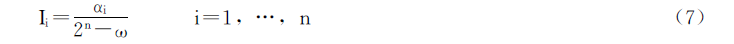
其中,分子αi是指由于投票人i作为摇摆情况下关键投票人的次数, 分母2n-ω是指无法成功产生结果的投票方案总数｡
需要补充说明的是,绝对Banzhaf指数和Coleman 的两类指数均以概率理论作为基本思想,因此其权力指数均位于[0,1] 之间｡该指数越接近于1, 其代表的权力越大；反之亦然｡
IMF决策权分布与改革前后变化
本部分的研究将采用前面介绍的绝对Banzhaf指数和Coleman指数, 测算IMF份额与投票权改革前后,成员国的决策权大小及其变化｡本部分所涉及的基础数据包含两套投票权分配方案:一套是2008年改革方案落实之前的投票权分配方案(也称为前新加坡方案),另一套则是2010年改革方案实施之后的投票权分配方案｡①需要说明的是,考虑到部分国家的投票权比重过小,本文对投票权比重数据进行了四舍五入处理,如某国投票权比重不足总投票权的0.5%,则本研究将其投票权视为0｡处理之后,2008年改革方案生效前参与测算投票权及其决策权的样本国家数目为131个,2010年改革方案生效后的国家数目为152个｡为了方便分析和展示,后文的描述仅就主要国家展开,投票权较小国家的情况进行合并处理｡
(一) 采用绝对Banzhaf指数测算的决策权变化
绝对Banzhaf指数描绘了单个投票者在整体投票者中的权力分布｡在规范化处理后,其结果如下｡
1. IMF成员国间决策权差距缩小
在85%多数票获胜规则下,2010年改革方案将整体拉低大国的决策权｡投票权比重超过3% 的国家, 其绝对Banzhaf指数均出现了下降,如表3所示｡在70% 多数票获胜规则下, 中国在所有IMF 成员国中,决策权的提升幅度最大, 从原来的3.28%提升为6.16%,提升了2.9个百分点｡不仅如此, 在该获胜规则下, 中国还是唯一在2010 年改革方案中投票权比重超过3%且没有出现权力折损的国家｡相反,在投票权比重超过3%,但因2010年改革而导致决策权折损最大的国家是法国和英国,其绝对Banzhaf指数均下降了0.9个百分点｡这种变化证实了IMF份额与投票权改革的确有助于该机构决策体系向着民主化方向发展｡
2. 新兴经济体决策权变化差异大
2010年份额与投票权改革生效后,部分新兴经济体的决策权增强,但同时也有部分国家的决策权有所缩小｡如表3 所示, 在85% 多数票获胜规则下, 韩国､土耳其､巴西和墨西哥的绝对Banzhaf指数在改革后分别上升1%､0.7%､0.5% 和0.5%,而沙特阿拉伯和阿根廷则分别下降0.6% 和0.4%｡在70% 多数票获胜规则下,中国､韩国､巴西､墨西哥的绝对Banzhaf指数在改革后分别上升2.9%､1%､0.9%和0.7%,而沙特阿拉伯和阿根廷则分别下降1.3% 和0.3%, 沙特阿拉伯的权力折损幅度甚至超过了七国集团所代表的发达经济体｡
相较于85%多数票规则,70%多数票获胜规则对维护中国的决策权更加有利｡对中国而言,支持70%多数票获胜规则可以保障中国的决策权与投票权同步实现大幅提升｡这一结论同样适用于印度､巴西､墨西哥等新兴经济体｡
3. 投票权与决策权无明确线性关系
投票权与决策权之间不存在线性关系｡投票权扩大并不一定意味着决策权的增强｡例如,中国的投票权比重从原来的2.93%上升为6.07%,但是中国的绝对Banzhaf指数从之前的2.98%下降为2010年改革后的2.87%,下降了0.1个百分点｡与中国类似, 尽管在2010 年改革后日本的投票权比重有些许提升, 但是在85%多数票获胜规则下,其决策权也出现了相对削弱, 如表3 所示｡这种现象产生的原因在于2010年改革后成员国间的投票权比重趋向平等,大部分新兴经济体的投票权比重有所提升｡这一变化使得大国作为关键参与者形成获胜联盟的概率有所下降｡
此外,投票权并不能决定各成员国决策权的大小｡当两国投票权比重存在差异时,如果其构成获胜联盟的难度相同,则两国有可能拥有相同的决策权｡例如, 在2010年改革方案执行后,中国的投票权将上升至6.07%,略低于日本的6.14%｡但是,中日两国在85%或70%多数票获胜规则下作为形成获胜联盟关键参与者的概率是相同的｡换言之,在不考虑其他因素的影响下,中国与日本在IMF具有相同的决策权｡这意味着只需要经过精密的计算,一国可以用较小的成本换得相同的收益｡这一发现在维护国家利益和大国外交方面将大有裨益｡
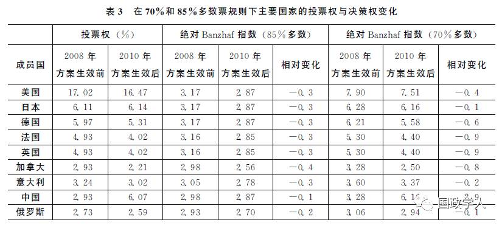
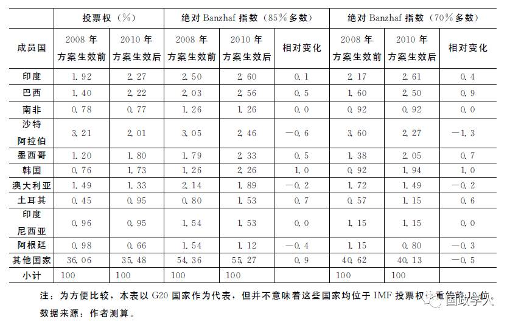
（二）采用Coleman指数测算的否决与倡议权力变化
对于Coleman指数的讨论将主要针对70%多数票获胜规则下的国家权力分布与变化,主要原因有两个:首先,在85%多数票获胜规则下, 美国在改革前后仍拥有绝对否决权,因此衡量阻止行动意义不大｡其次,在一定程度上, 倡议行动的权力大小是阻止行动权力的另一面｡当美国拥有绝对否决权时, 其他国家倡议行动的权力大幅减弱,分析的意义也不显著｡规范处理后,结果显示如下｡
1. 改革前后美国的否决权变化非常有限
在70%多数票获胜规则下,美国的Coleman阻止行动指数得分高于0.9999,与其拥有绝对否决权(即该指数为1)时相差无几｡这表明, 在经历2010年份额与投票权改革后,该国的否决权变化非常有限,依然维持在0.9999水平之上,如图3所示｡换言之,美国可以相对轻松地通过投票联盟,继续维持其绝对否决权｡
2. 改革后大部分新兴经济体的否决权上升
除了沙特阿拉伯和阿根廷以外,大部分新兴经济体的否决权有所上升,如中国､韩国､巴西､墨西哥和印度,如图3所示｡其中, 中国的Coleman 阻止行动权力指数上升幅度最大,从2010年改革前的0.41上升为改革执行后的0.82｡这意味着在2010年改革方案执行后, 中国的否决权将与日本等同, 成为IMF成员国中拥有第二大否决权的国家｡
改革后Coleman阻止行动权力指数超过0.5的6个国家分别为美国､日本､中国､德国､英国和法国｡这意味着2010年改革方案落实后,在IMF内部具有较强阻止行动权力的国家数目将从之前的5个扩大为6个｡IMF的阻止行动的权力分配更加均衡,这也从否决权的角度证实,IMF的改革对于推动其内部治理的民主化有积极作用｡
3.改革后IMF倡议行动的权力更加分散
如图4所示,改革前后相比,发达国家的倡议行动权力指数普遍下降, 而绝大部分新兴经济体的倡议能力则有所增强｡全球倡议行动的权力向着更加平衡的趋势发展,代表着IMF内部民主化程度的提升｡由于发达经济体偏好的倡议通常会受到其所处发展阶段及其意识形态的影响, 因此倡议行动权力的民主化进程有助于引导IMF改革向着价值体系更加多元化的方向发展｡
结语
西方国家在投票权及决策权的测算方面拥有相对悠久而完备的知识体系和方法论支持｡相比之下,中国学术界对于国际组织中权力计算的研究则显得相对有限｡随着中国参与全球治理的深度和广度不断扩大,相关知识的匮乏将成为重要掣肘｡中国在承担越来越多全球治理责任的同时,迫切需要厘清国际组织中不同成员之间的权力关系,特别是具有形式合法化特征的投票权和决策权的计算与分配｡
以IMF为例,通过绝对Banzhaf指数和Coleman指数的测算,本文发现,尽管IMF在加权投票制度中设置了基本投票权以保障平等原则,但在经历了历次增资所导致的基本投票权大幅稀释之后,份额已经成为投票权的决定因素｡然而,由于一国作为关键参与者所形成的获胜联盟的情况存在差异, 投票权比重的变化与决策权变动之间并不存在完全一致的线性关系｡ 当一国投票权比重上升时,有可能导致其决策权下降;而当两国的投票权比重不同时,两国仍可能拥有相同的决策权｡这种情况的存在,一方面给各成员国提供了以最小代价实现最高收益的机会,另一方面也对各国参与国际决策机制改革或建设的能力提出了更高要求｡
此外,本研究还发现,对于中国等新兴经济体而言,着力推动IMF采用70%多数票获胜规则将有助于维护自身的决策权｡在70%多数票获胜规则下,中国的决策权将与投票权比重保持同步上升,其综合决策权力､阻止行动的权力以及倡议行动的权力均有显著上升｡
总体上看, IMF改革所带来的权力分布呈现出明确的趋势, 即成员国决策权间的差距在缩小､欧美等发达国家的决策权得到稀释｡ 而这一趋势完全符合习主席对全球治理所作的判断和预期,“世界上的事情越来越需要各国共同商量着办,建立国际机制､遵守国际规则､追求国际正义成为多数国家的共识｡
推进全球治理体制变革并不是推倒重来, 也不是另起炉灶, 而是创新完善, 使全球治理体制更好地反映国际格局的变化, 更加平衡地反映大多数国家特别是新兴市场国家和发展中国家的意愿和利益｡
本文刊登于《中国社会科学》2016年第12期
筛选：汪乐乐 编辑：敖遊
声 明
国政学人微信公众平台系非盈利学术平台。建立初衷是方便广大学人进行学术研究，促进学术的传播和交流，不做任何商业用途。如有任何权利问题，请直接与我们联系。